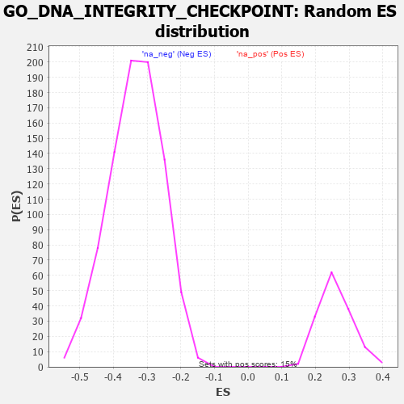

| | | Dataset | 7d |
| Phenotype | NoPhenotypeAvailable |
| Upregulated in class | na_pos |
| GeneSet | GO_DNA_INTEGRITY_CHECKPOINT |
| Enrichment Score (ES) | 0.4801552 |
| Normalized Enrichment Score (NES) | 1.8514715 |
| Nominal p-value | 0.0 |
| FDR q-value | 0.094151795 |
| FWER p-Value | 0.744 |
Table: GSEA Results Summary
 Fig 1: Enrichment plot: GO_DNA_INTEGRITY_CHECKPOINT
Fig 1: Enrichment plot: GO_DNA_INTEGRITY_CHECKPOINT
Profile of the Running ES Score & Positions of GeneSet Members on the Rank Ordered List
| PROBE | GENE SYMBOL | GENE_TITLE | RANK IN GENE LIST | RANK METRIC SCORE | RUNNING ES | CORE ENRICHMENT | | 1 | H2AX | | | 20 | 4.738 | 0.1462 | Yes |
| 2 | PCBP4 | | | 44 | 2.875 | 0.2336 | Yes |
| 3 | CDC45 | | | 239 | 0.950 | 0.2389 | Yes |
| 4 | CNOT7 | | | 348 | 0.750 | 0.2488 | Yes |
| 5 | HUS1 | | | 362 | 0.735 | 0.2702 | Yes |
| 6 | CLSPN | | | 379 | 0.719 | 0.2908 | Yes |
| 7 | BAX | | | 387 | 0.711 | 0.3122 | Yes |
| 8 | NBN | | | 405 | 0.696 | 0.3319 | Yes |
| 9 | RAD9A | | | 418 | 0.681 | 0.3518 | Yes |
| 10 | CNOT6 | | | 462 | 0.655 | 0.3669 | Yes |
| 11 | THOC1 | | | 507 | 0.627 | 0.3810 | Yes |
| 12 | CNOT2 | | | 514 | 0.625 | 0.3999 | Yes |
| 13 | CCNB1 | | | 581 | 0.601 | 0.4104 | Yes |
| 14 | RBL2 | | | 593 | 0.596 | 0.4277 | Yes |
| 15 | MRE11 | | | 693 | 0.560 | 0.4328 | Yes |
| 16 | CDC6 | | | 709 | 0.557 | 0.4484 | Yes |
| 17 | BLM | | | 804 | 0.531 | 0.4532 | Yes |
| 18 | RFWD3 | | | 843 | 0.521 | 0.4647 | Yes |
| 19 | RPA2 | | | 851 | 0.519 | 0.4802 | Yes |
| 20 | RINT1 | | | 1110 | 0.462 | 0.4620 | No |
| 21 | TFDP1 | | | 1180 | 0.450 | 0.4674 | No |
| 22 | CNOT3 | | | 1274 | 0.435 | 0.4693 | No |
| 23 | CARM1 | | | 1413 | 0.408 | 0.4647 | No |
| 24 | E2F4 | | | 1501 | 0.390 | 0.4659 | No |
| 25 | ORC1 | | | 1661 | 0.363 | 0.4572 | No |
| 26 | MRNIP | | | 1743 | 0.346 | 0.4579 | No |
| 27 | RAD17 | | | 1804 | 0.336 | 0.4608 | No |
| 28 | MSH2 | | | 1819 | 0.334 | 0.4695 | No |
| 29 | FOXO4 | | | 2004 | 0.304 | 0.4558 | No |
| 30 | DTL | | | 2154 | 0.284 | 0.4459 | No |
| 31 | CNOT4 | | | 2161 | 0.283 | 0.4540 | No |
| 32 | TIPRL | | | 2200 | 0.277 | 0.4579 | No |
| 33 | CDK2 | | | 2226 | 0.272 | 0.4633 | No |
| 34 | CDC5L | | | 2353 | 0.253 | 0.4553 | No |
| 35 | CDT1 | | | 2505 | 0.226 | 0.4433 | No |
| 36 | RAD1 | | | 2528 | 0.223 | 0.4475 | No |
| 37 | MUS81 | | | 2673 | 0.202 | 0.4356 | No |
| 38 | ATR | | | 2800 | 0.183 | 0.4255 | No |
| 39 | CUL4A | | | 3097 | 0.137 | 0.3923 | No |
| 40 | MDC1 | | | 3113 | 0.135 | 0.3947 | No |
| 41 | FOXN3 | | | 3159 | 0.129 | 0.3930 | No |
| 42 | FZR1 | | | 3205 | 0.122 | 0.3912 | No |
| 43 | EME1 | | | 3246 | 0.114 | 0.3897 | No |
| 44 | CNOT1 | | | 3473 | 0.081 | 0.3636 | No |
| 45 | XPC | | | 3509 | 0.076 | 0.3616 | No |
| 46 | WAC | | | 3618 | 0.056 | 0.3497 | No |
| 47 | HINFP | | | 3920 | 0.006 | 0.3119 | No |
| 48 | TOP2B | | | 3938 | 0.005 | 0.3099 | No |
| 49 | SYF2 | | | 4008 | -0.009 | 0.3014 | No |
| 50 | ERCC6 | | | 4464 | -0.087 | 0.2466 | No |
| 51 | TAOK3 | | | 4823 | -0.162 | 0.2065 | No |
| 52 | TIPIN | | | 4839 | -0.166 | 0.2098 | No |
| 53 | EP300 | | | 4941 | -0.186 | 0.2029 | No |
| 54 | PRKDC | | | 4955 | -0.189 | 0.2072 | No |
| 55 | ATM | | | 5210 | -0.249 | 0.1829 | No |
| 56 | TOP2A | | | 5216 | -0.250 | 0.1901 | No |
| 57 | CDK1 | | | 5264 | -0.262 | 0.1924 | No |
| 58 | PLK1 | | | 6082 | -0.500 | 0.1048 | No |
| 59 | STK33 | | | 6124 | -0.512 | 0.1157 | No |
| 60 | DOT1L | | | 6939 | -0.897 | 0.0409 | No |
| 61 | CASP2 | | | 7442 | -1.322 | 0.0190 | No |
| 62 | NEK11 | | | 7579 | -1.521 | 0.0496 | No |
Table: GSEA details [plain text format]

Fig 2: GO_DNA_INTEGRITY_CHECKPOINT: Random ES distribution
Gene set null distribution of ES for GO_DNA_INTEGRITY_CHECKPOINT